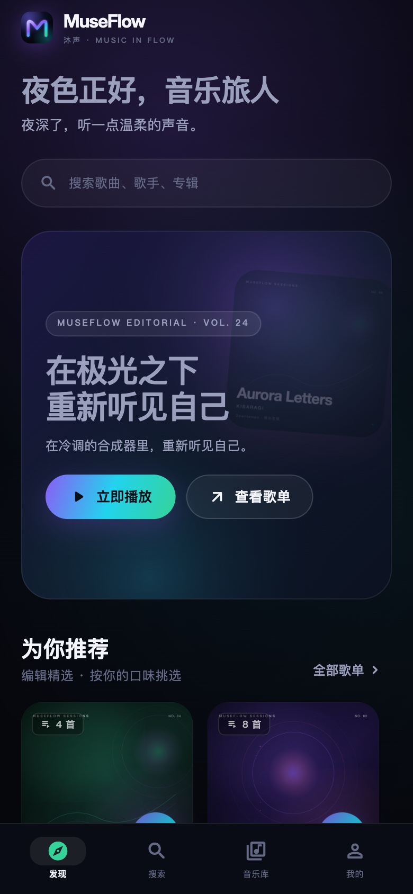
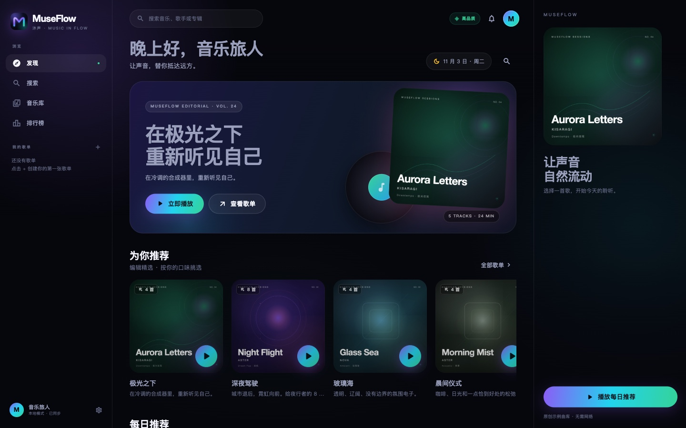
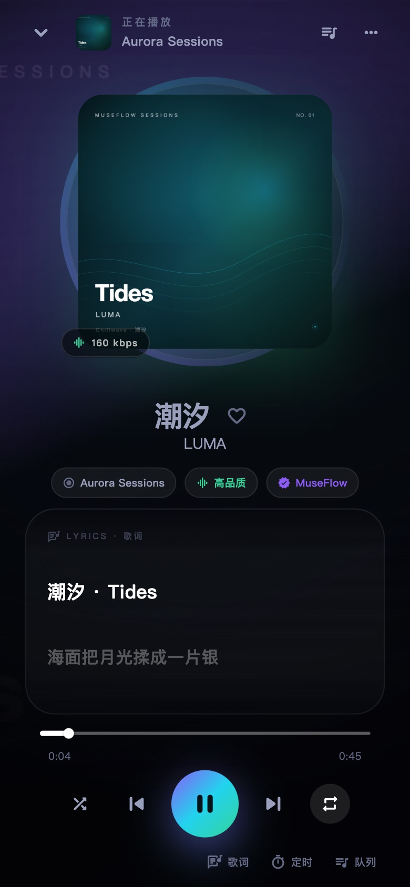

01 / SEARCH
一个搜索框，五个平台
网易云、酷我、酷狗、QQ 音乐、咪咕并行检索。结果按音源标注，想听哪个版本，由你决定。
MuseFlow 沐声，把五个音乐平台装进同一张界面。
一次搜索，统一试听、歌词、收藏与下载。
网易云 · 酷我 · 酷狗 · QQ 音乐 · 咪咕

从搜索到播放，从歌词到下载，每个细节都为“少一步操作”而设计。
网易云、酷我、酷狗、QQ 音乐、咪咕并行检索。结果按音源标注，想听哪个版本，由你决定。
遇到会员或版权限制时，按歌名、歌手与时长匹配其它平台的可播放版本，不打断这一首。
逐行高亮、翻译合并，点击任意一句即可跳转。让歌词成为画面，而不只是文字。
随手加入下一首，拖动进度，切换列表循环或单曲循环，播放节奏始终在你手里。
收藏、自建歌单、最近播放与下载记录全部保存在本机，不需要账号，也不上传云端。
从 6 万多个电台中精选 520 个可用频道，覆盖 190+ 国家。华语、欧美、日韩、世界，按类型与关键词找到此刻想听的声音。
通过 WebDAV 或 SMB 接入群晖、威联通、TrueNAS 与 Windows 共享。目录浏览、播放全部、收藏与按需缓存，音乐始终留在自己的硬盘里。
Aurora Noir 视觉语言：近黑舞台、玻璃质感与一道贯穿始终的极光。

底部导航、迷你播放器、全屏播放页，一切都在拇指能够到的地方。横屏、平板与大屏也会自动切换布局。

不改变你的收听习惯，只是让它们住在同一个地方。
曲库、封面与歌词最完整，默认主音源。
SEARCH · PLAY · LYRICS直链稳定，换源时的可靠备选。
SEARCH · PLAY海量曲库与 KRC 歌词，覆盖更多版本。
SEARCH · PLAY · LYRICS正版曲库，会员曲目可自动换源。
SEARCH · PLAY提供搜索与元数据，播放时自动切换。
SEARCH · METADATA8 首原创氛围示例曲，没有网络也能听。
ORIGINAL · OFFLINE部分会员或版权受限曲目会自动换源。所有音乐版权归各平台及版权方所有。
音源切换、歌词解析、播放队列、下载缓存——这些不该成为负担。MuseFlow 把它们收进干净的交互里，只留下音乐。
15 到 90 分钟，到点自动暂停。
标准、高品质与无损，按网络自由选择。
收藏与歌单只保存在这台设备。
播放、暂停、上一首、下一首，无需回到 App。